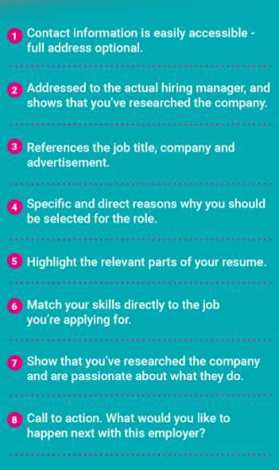
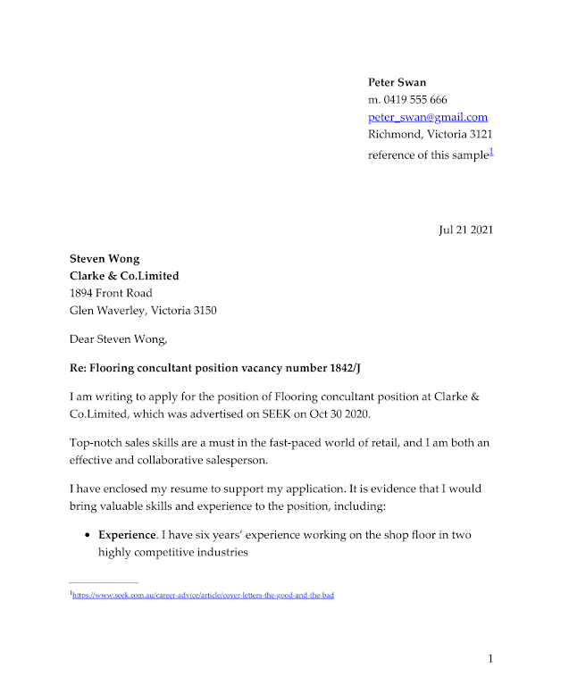

Cover letter automation
In this introduction, I will explain how to partially automate your cover letter by R.
I do this cover letter automation to help me create some data-driven cover letters. These cover letters are not perfectly polished, but they are the perfect start to assist you in dealing with hundreds of job applications.
Here are 2 references that helped me to create this tutorial:
*Update 27/08/2021: The approach I used for over 30 cover letters was more complicated than this introduction. 30% of these cover letters helped me pass the first stage of job applications.
Many thanks to Yihui Xie who contributed so many wonderful R packages, and I am so glad to connect with him on Linkedin.
Step 1
Read the sample cover letter and image yours.
Let us firstly read this sample:


Seek has given the excellent structure hints under the letter. I disassemble this sample letter into 14 variables, they are:
1 HR name
2 Company name
3 Address
4 City and postcode
5 Job title
6 Job reference number
7 Advertisement from
8 Job post date
9 Skill requirement
10 Skills match
11 Company background
12 Your experience
13 Results
14 Performance
I made two spreadsheets to store these 14 variables, you can find them in the following links:
Step 2
Prepare R and packages
Package: - 1 dplyr - 2 pagedown
Once you installed these two packages in RStudio, you can create an R Markdown file
And select “from template”, then HTML Letter.
Your RStudio will open a sample letter. Keep the first 11 lines and change your title, author and Knit setting. Like this:

You can remove the rest content and you are ready.
Step 3
3.1 Import Excel files
Firstly, you can load the package dplyr and set up chunk knit options.
library(dplyr)
knitr::opts_chunk$set(echo = FALSE, warning = FALSE, message = FALSE, include = FALSE)Secondly, you can import two Excel files:
path <- "D:/My Storage/blog/Cover letter/"
company_detail <- readxl::read_xlsx(paste0(path,"seek_example.xlsx"))
exp_list <- readxl::read_xlsx(paste0(path,"experience_list.xlsx"))- The path is your folder address where you store two spreadsheets.
3.2 prepare 14 variables
Since the spreadsheets are imported, you can manage 14 variables. I leave all codes below. Comments stay after # to introduce some hints.
# Indicate which company (# row) you write for in the 'company_detail'
rownumber <- 1# in case if there is no specific manager name, you can use "Hiring Manager".
manager_name <- company_detail[rownumber,][,"HR_name"] %>% unlist() %>% ifelse(is.na(.) == "TRUE","Hiring Manager", .)
# If you forget to write company name, it will warn you "No company name?"
company_name <- company_detail[rownumber,][,"company_name"] %>% unlist() %>% ifelse(is.na(.) == "TRUE","No company name?", .)
# In case there is no address, you can leave blank.
company_address <- company_detail[rownumber,][,"address"] %>% unlist() %>% ifelse(is.na(.) == "TRUE","", .)
# In case there is no address, you can leave blank.
city_postcode <- company_detail[rownumber,][,"city_postcode"] %>% unlist() %>% ifelse(is.na(.) == "TRUE","", .)# your job title. It warns you if there is no job title.
job_title <- company_detail[rownumber,][,"job_title"] %>% unlist() %>% ifelse(is.na(.) == "TRUE","**Wrong title !**", .)
# the job reference number. It will leave blank if there is no reference number
job_number <- company_detail[rownumber,][,"job_number"] %>% unlist() %>% ifelse(is.na(.) == "TRUE","", .)
# where you find this job information. It leaves blank if there is no information.
adv_from <- company_detail[rownumber,][,"adv_from"] %>% unlist() %>% ifelse(is.na(.) == "TRUE","", .)
# The post date of this job. I make this date format as "OCT 30 2020", and you are free to change it.
post_date <- company_detail[rownumber,][,"post_date"] %>% pull(.) %>% as.Date(.) %>% format(., "%b %d %Y") %>% ifelse(is.na(.) =="TRUE","", . )
# logic check. Add 'on' before date if there is a valid date.
on_logi <- ifelse(is.na(post_date) == FALSE, "on ", "")# your experience
experience <- exp_list[rownumber,][,"Experience"] %>% unlist() %>% ifelse(is.na(.) == "TRUE", "",.)
# results
results <- exp_list[rownumber,][,"Results"] %>% unlist() %>% ifelse(is.na(.) == "TRUE", "",.)
# performance
performance <- exp_list[rownumber,][,"Performance"] %>% unlist() %>% ifelse(is.na(.) == "TRUE", "",.)# what skills match the job
skills <- company_detail[rownumber,][,"skills_required"] %>% unlist()
# more detail
skill_match <- company_detail[rownumber,][,"Skills_match"] %>% unlist()
# company background and research
company_background <- company_detail[rownumber,][,"company_research"] %>% unlist()Step 4
Create the cover letter structure
Here I display some fundamental Rmarkdown syntax rules to format text in the final report:

You can also find the cheatsheet at this link:
The sample cover letter structure is below:
::: from
**Peter Swan**
m. 0419 555 666
peter_swan@gmail.com
Richmond, Victoria 3121
[reference of this sample](https://www.seek.com.au/career-advice/article/cover-letters-the-good-and-the-bad)
:::
::: date
`r paste(date)`
:::
**`r paste(manager_name)`**
**`r paste(company_name)`**
`r paste(company_address)`
`r paste(city_postcode)`
Dear `r paste(manager_name)`,
**Re: `r paste(job_title," ",job_number)`**
I am writing to apply for the position of `r paste(job_title)` at `r paste(company_name)`, which was advertised on `r paste(adv_from)` `r paste(on_logi,post_date)`.
`r paste(skills)` skills are a must in the fast-paced world of retail, and I am both an effective and collaborative salesperson.
I have enclosed my resume to support my application. It is evidence that I would bring valuable skills and experience to the position, including:
- **Experience**. `r paste(experience)`
- **Results**. `r paste(results)`
- **Performance**. `r paste(performance)`
My skills are perfectly tailored for this job, and `r paste(skill_match)`
`r paste(company_name)` `r paste(company_background)`
I would value the opportunity to talk with you more about this position, and how I could use my skills to benefit your organisation.
Thank you for considering my application. I look forward to hearing from you.
Yours sincerely,
Peter Swan.- I use the following codes to get current date and time:
date <- Sys.Date() %>% format(., "%b %d %Y")A great feature of using R pagedown to write a cover letter is that you can always add hyperlinks to it. This allows HR to directly open your LinkedIn page and other information.
As an example, I add a hyperlink of the SEEK sample letter into this cover letter, you can find it under the home address.
Here is the output:

This basic cover letter automation is done!